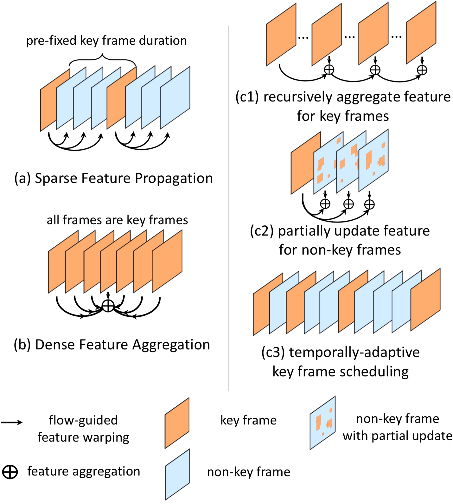
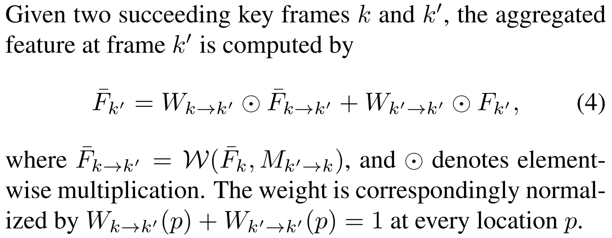
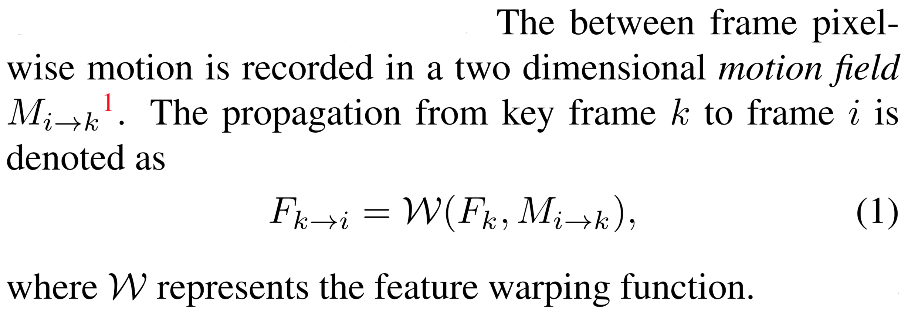
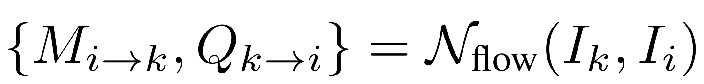
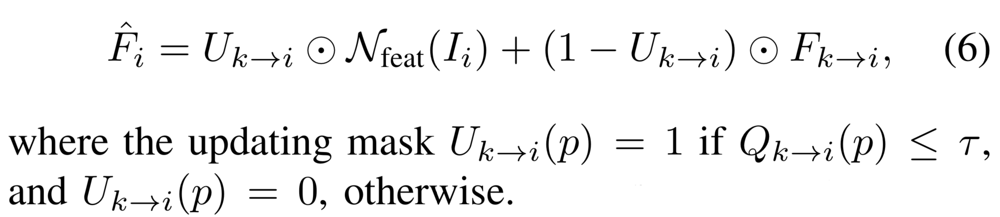
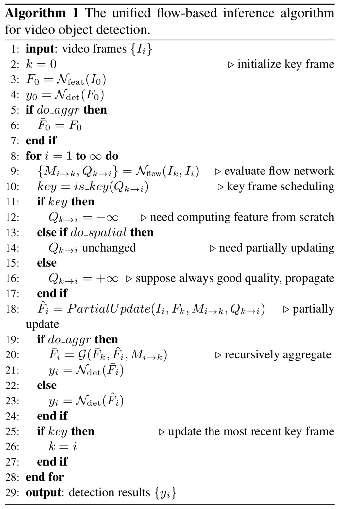
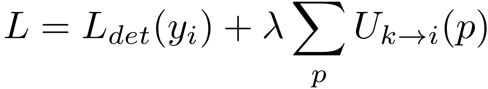

painterdrown Blog - painterdrown CV
⏰ 2018-06-03 00:21:48
👨🏻💻 painterdrown
[TOC]
这篇论文是基于前面 DFF 和 FGFA 的基础之上，提出了一个旨在多帧、端到端的 feature 及 cross-frame motion 的深度学习方法。提出了三项新技术来提高稳定性，优化速度和精度，以及在两者之间做权衡。
之前的两项工作都有各自的缺点：DFF (Deep Feature Flow for Video Recognition) 中许多帧的特征都是由关键帧的特征传播得到的，只是一个近似的结果，存在着较大的误差（优势是速度）。FGFA (Flow-Guided Feature Aggregation for Video Object Detection) 则为了提升精度，多做了 motion estimation, feature propagation 和 aggregation，但是速度上又受限。
两者共同的主旨：motion estimation 模块放在了网络中来计算，而且整个网络框架是端到端的。
此论文要介绍的方法基于两者，效果更快、更准、更稳定。三项新技术分别是：
sparsely recursive feature aggregation（稀疏递归特征聚集）。这项技术用来在特征聚集时保持特征的质量，同时又减少了计算开销（与 DFF 一样，也是只对关键帧进行操作）。可以说，这项技术吸取了前面 DFF 和 FGFA 的精华，且效果优于两者。
spatially-adaptive partial feature updating（空间自适应部分特征更新）。用于在非关键帧上重新计算特征（尽管传播的质量很差）。这项技术显著地提升了最终的检测精度。
temporally-adaptive key frame scheduling（时间自适应关键帧调度）。之前的 DFF 是固定长度地选取关键帧（这样效果很一般），现在这项技术能预测一个关键帧的用途，即关键帧特征的质量。
现在的图像目标检测已经比较成熟，一般分两步走：
接下来要讲的是视频目标检测里面的两个基础方法。
讲的其实就是前面的 DFF，详见：
Flow-Guided Feature Aggregation for Video Object Detection 学习笔记
不过这里加了一个前缀 sparse，要理解的话应该是其是用来修饰关键帧的。因为只让关键帧进入全卷积层去算特征图，而且关键帧的数目占所有视频帧的比例比较小，因此修饰其为“稀疏”。
同样的，讲的其实是上一篇的 FGFA，详见：
Flow-Guided Feature Aggregation for Video Object Detection 学习笔记
前缀 dense 应当理解为：在对 reference frame 做聚集的时候，会聚集前后 K 帧的运动信息。这里是对 reference frame 周围的所有帧都做聚集，所以说是“稠密”。

Exploits the complementary property and integrates the methods in DFF & FGFA, both accurate and fast.
前面 FGFA 的特征聚集，是对每个帧都做了一遍，虽说检测精度有明显提升，但是速度很慢。而且也没必要每一帧都做聚集，这样就浪费了邻近帧之间的相似信息。这里提到的新技术将只在关键帧上面做 recursive feature aggregation（递归特征聚集）。

上图是核心操作：假设我们已经聚集到了第 k 帧，接下里要聚集第 k^’^ 帧，则已经算好的中间量有：
两者各自与权重矩阵点乘后相加，得到第 k^’^ 帧到聚集特征。总结一下就是：第 k 帧的特征聚集了前面的帧特征，然后又传播给下一个关键帧 k^’^。
Extends the idea of adaptive feature computation from temporal domain to spatial domain, resulting in spatially-adaptive feature computation that is more effective.
前面 DFF 的特征传播，虽说检测速度提升了不少，但是对于非关键帧的检测精度来说很差。

这个式子得到的是从关键帧 k 到邻近非关键帧 i 的特征传播，不是直接的 i 的特征。所以，要得到 i 比较好的特征，就必须保证上式的这个特征传播质量。作者提出了一个新的概念来做这个事情：feature temporal consistency Q~k→i~。这是在 N~flow~ 的输出层加一个 sibling branch 来做预测，得到这个值。

算出 Q~k→i~ 后，通过一个阈值 τ 来判断其是否与 i 帧相容。如果低于阈值，说明 F~k→i~ （表示从 k 传播到 i 得到的特征）的效果不好，因此需要另外对 i 帧“打个补丁”—— updating with real feature F~i~§，也就是用卷积重新计算 i 的特征图进行更新：

值得注意到是，特征更新的过程是可以逐层进行的（用第 n-1 层来更新第 n 层）。
Proposes adaptive key frame scheduling that further improves the efficiency of feature computation.
3.2 中提到的 feature temporal consistency Q~k→i~，我们可以用来做关键帧判断。可以这样简单的理解：如果 Q~k→i~ 很小，说明第 k 帧与第 i 帧的相容性低，这也就说明了 i 很大概率是下一个关键帧。

跟 FGFA 训练过程一样，由于考虑到内存问题，在 SGD 的 mini-batch 中只选取两帧（先取的作为关键帧，后取的作为非关键帧）。
在做前向的过程中：
注意一下这里的损失函数为：

式子右边第一项是 Faster R-CNN 中的损失函数 (multi-task: 同时考虑了分类和回归的效果)，右边第二项的目的是对重新计算的区域大小进行限制（训练的时候按照 1:3 的概率使 U~k→i~ = 0/1），以提高 propagating feature 和 recomputing feature 的质量。